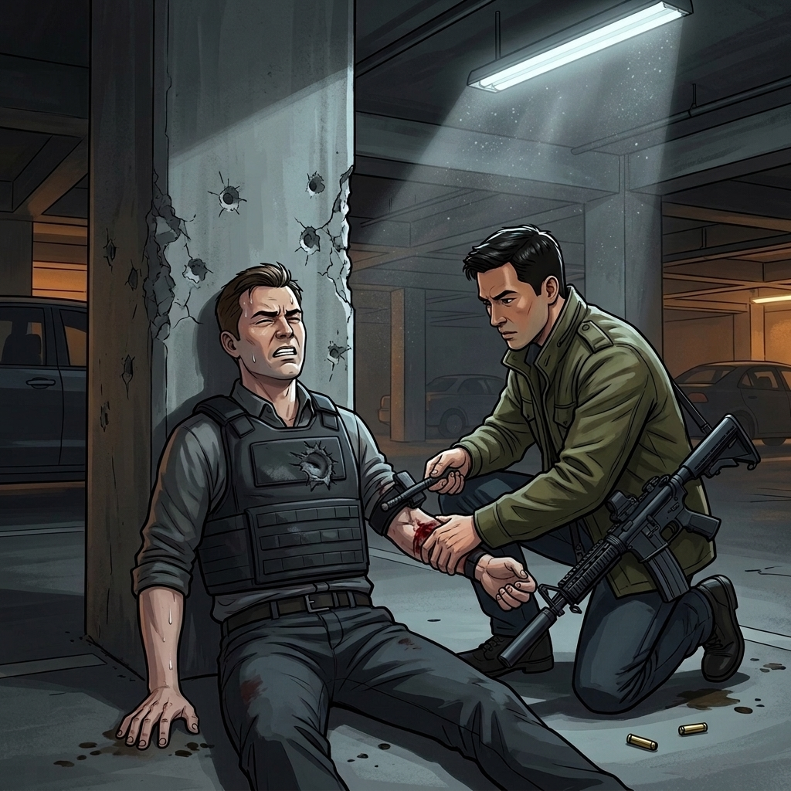

Satya TTRPG Health, Anatomical Trauma, Fatigue & Mental Conditions
Rust Engine Implementation:
crates/satya-engine/src/health_survival.rs(HitLocationZone,FatigueLevel,StructuralWoundTier,FractureBiomechanics,HemorrhageGrade,BloodLossStage,WoundShockTier,lookup_hit_location_1d20,evaluate_fatigue_state,evaluate_asphyxiation,evaluate_blood_loss_state,evaluate_wound_shock_save) andcrates/satya-engine/src/status_and_triage.rs(PhysiologicalStatusEffect,MentalTraumaCondition,MedicalInterventionKind,evaluate_mental_trauma_shock,evaluate_medical_triage). Guided Play Example: See Guide 05 §3.4 (Exertion&Fatigue) and Guide 06 §4–§5 (BABT, Hemorrhage &6sTourniquet Triage).
This chapter defines the canonical Health, Anatomical Trauma, Physiological Status, and Mental Condition System for Satya (for definitions of all mathematical variables and trauma/stamina symbols such as FT, WSR, Tmax, Cmax, Fmax, TNP, TNGM, see the Mathematical Notation, Variables & Formula Glossary). As established in Combat Architecture, Tactical Triad & Pools, Satya completely rejects ablative "Hit Points" (HP). A human being is not a uniform sack of numeric points that operates at 100% efficiency until reaching 0.
Instead, Satya models human survivability and degradation across five interconnected physiological and psychological tracks: 1. Hit Locations & Anatomical Specificity (Where the trauma lands and which biomechanical ceilings Tmax, Cmax, Fmax or senses it disables) 2. Physical Short-Term Damage (Metabolic Fatigue, Lactic Burn, and Breath/Oxygen Deprivation) 3. Physical Long-Term & Acute Structural Damage (Broken Bones & Dislocations, Hemorrhaging & Blood Loss, Internal Organ Trauma, and Systemic Wound Shock) 4. Physiological & Sensory Status Effects (Blinded, Deafened, Stunned, Dizzy, Nausea, Unconscious, etc.) 5. Mental & Psychological Damage Effects (Acute Mental Shock, Panic, Dissociation, and Catatonia)
Kinetic Strike · Ballistic Penetration · Blast
Metabolic Exertion · Psychological Horror
Exertion Marks vs. FT = FIT + DIS/2
-2 Pool/lvl · +10% TC/lvl · +Δ_int
Chokes, Drowning, Vacuum
Rapid Stamina & Consciousness Collapse
Head/Eyes · Neck · Chest/Vitals · Gut
Shoulder/Arm/Hand · Hip/Leg/Foot
Sprains, Dislocations, Broken Bones
Slashes Aspect Ceilings (T_max, C_max, F_max)
Capillary · Venous · Arterial
Hypovolemic Shock & Bleed-Out Timer
Neurogenic Pain + Trauma vs. WSR
-2 Pool/tier · +25% TC/tier · Consciousness Roll
Blinded · Deafened · Stunned
Dizzy/Vertigo · Nausea · Unconscious
Acute Freeze · Panic / Rout
Cognitive Dissonance · Catatonia
1. Hit Locations & Specificity of Damage Effects
When a melee strike, projectile, or shrapnel fragment hits a target, where it lands determines its mechanical effect.
1.1 Determining Hit Location (1d20 Roll vs. Control Called Shots)
- Default / Unaimed Hit (
1d20Roll): If the attacker did not target a specific zone (or scored only+1net success on a called shot), roll1d20on the Anatomical Hit Location Table below. - Targeted / Called Shot (
ControlPrecision):• An attacker may declare a specific Hit Location before rolling by accepting an External Difficulty modifier (Δext, loc) offset by theirControl(C) allocation:• Broad Zone (Torso, Left/Right Leg, Left/Right Arm): Δext = +2 (waived if attacker'sControlexceeds defender'sControlby+3+).• Specific Sub-Zone / Joint (Knee, Wrist/Hand, Shoulder, Pelvis, Liver, Face/Jaw): Δext = +4.• Vital Pinpoint / Gap in Armor (Eye/Optic Slit, Carotid Artery, Cranial Ocular Box, Heart): Δext = +8.
1.2 Master Anatomical Hit Location & Specificity Table
1d20 | Hit Location (Sub-Zones) | Called Shot Δext | Primary Aspect Ceiling Slashed | Specific Anatomical & Mechanical Effects |
|---|---|---|---|---|
1 | Foot / Ankle (L or R) | +4 | Tempo Cap (Tmax)<br/>-2 / -5 / -10 | Mobility Anchor: Fractured tarsals or severed Achilles locks running/sprinting; -4 to Effective Root against sweeps. |
2–3 | Calf / Shin (Tibia/Fibula) (L or R) | +2 (Leg) | Tempo Cap (Tmax)<br/>-2 / -5 / -10 | Footwork Degradation: Muscle cramp or tibial fracture; Tier 3+ fracture prevents standing without support. |
4 | Knee Joint (Patella/ACL) (L or R) | +4 | Tempo Cap (Tmax) & Root<br/>-4 / -8 / Locked 0 | Joint Collapse: High susceptibility to Blunt/Leverage trauma; Tier 2+ tear/dislocation forces immediate Prone check. |
5–6 | Thigh (Femur / Femoral) (L or R) | +2 (Leg) | Tempo Cap (Tmax) & Force (Fmax) | Arterial Hazard: Deep Piercing/Slashing wounds risk Femoral Arterial Bleed; broken femur inflicts immediate Wound Shock +3. |
7 | Pelvis / Hip Girdle / Groin | +4 | Tempo (Tmax) & Force (Fmax) | Center of Mass Structural Lock: Pelvic fracture locks Tempo = 0 (cannot walk/stand) and inflicts excruciating neurogenic shock. |
8–10 | Abdomen / Gut / Liver / Spleen | +2 (Torso) | Force Cap (Fmax) & Pool (Peff) | Visceral Shock & Nausea: Blunt liver/solar-plexus hit triggers Nausea / Winded; penetrating gut wound causes sepsis & internal bleed. |
11–13 | Chest / Ribcage / Lungs | +2 (Torso) | Force Cap (Fmax) & FIT | Respiratory Trauma: Cracked ribs slash Force Cap and impose pain when breathing (-4 FIT); penetrating hit causes Pneumothorax (collapsed lung). |
14 | Vital Thoracic (Heart / Spine / Aorta) | +8 | All Ceilings (T, C, F) | Catastrophic Vitals: Penetrating trauma causes massive Arterial Hemorrhage; spinal hit causes immediate lower-body Paralysis. |
15 | Shoulder / Clavicle / Scapula (L or R) | +4 | Force Cap (Fmax) & Control (Cmax) | Shoulder Girdle Failure: Dislocated shoulder or broken collarbone disables lifting, two-handed bracing, and heavy swings with that arm. |
16–17 | Upper Arm / Elbow / Forearm (L or R) | +2 (Arm) | Control (Cmax) & Force (Fmax) | Brachial & Lever Trauma: Slashes parry/aiming stability (Control) and striking power (Force); deep cuts risk Brachial Artery. |
18 | Wrist / Hand / Fingers (L or R) | +4 | Control Cap (Cmax) & DEX | Disarm & Manual Lock: Tier 2+ hit forces immediate FOR/DEX Disarm Check; fractured wrist/fingers prevent firing or gripping with that hand. |
19 | Neck / Throat / Carotid / Cervical | +8 | All Ceilings + Airway/Bleed | Lethal Vulnerability: Blunt strike crushes trachea (Asphyxiation + mutes speech ELO = 0); blade/bullet severs Carotid/Jugular or cervical spine. |
20 | Head (Cranium / Face / Jaw / Eyes) | +6 to +8 | Control Cap (Cmax), SIG, FOC, ANA | Neurological & Sensory Apex: Blunt impact triggers Stunned / Concussed / Unconscious; eye hit causes Blinded; jaw hit impairs speech. |
2. Physical Short-Term Damage: Fatigue, Exertion & Asphyxiation
Short-term physical damage represents reversible metabolic exhaustion, lactic acid accumulation, and oxygen debt that degrade performance within minutes or seconds, but recover with rest, hydration, and breath without requiring surgical intervention.
2.1 Exertion Marks & The Fatigue Threshold (FT)
Every character has a Fatigue Threshold (FT) derived from their Fitness (FIT) and Discipline (DIS):
See this in play: Guide 05 — Exchange 4: Watching
Exertion Marksvs.Fatigue Threshold.
(At human average FIT 10, DIS 10, FT = 15 Exertion Marks per Fatigue Level).
- How Exertion Marks Accumulate: 1. Combat High-Output Exchanges: Allocating > 50% of your
Tempo CaporForce Capon an action adds+1Exertion Mark (+2Marks if both exceed50%). 2. All-Out Sprinting: Every20 Ticks(5 seconds) of all-out sprinting adds+2Exertion Marks (modified by Encumbrance Tier). 3. Grappling & Clinch Wrestling: Every contested grappling exchange adds+1Base Exertion Mark (plus+1if carrying heavier opponent's weight). 4. Overland Forced March / Heavy Labor: Every hour of heavy physical labor or forced marching triggers aFITcheck or adds+1fatigue_level. - Whenever accumulated Exertion Marks ≥ FT, reset Exertion Marks by subtracting FT and increase
fatigue_levelby+1.
2.2 The Six Fatigue Levels (0–5)
fatigue_level | Condition Name | Internal Mod (Δint) | Tactical Pool Drain (Δ P) | Time Penalty (action_time_factor) | Physiological Symptoms & Recovery Time |
|---|---|---|---|---|---|
0 | Fresh / Rested | 0 (or -2 if Focused) | 0 | ×1.00 (+0%) | Normal baseline respiration and neuromuscular response. |
1 | Winded / Warm | +2 (δunder = 8) | -2 Pool | ×1.10 (+10%) | Heavy breathing, light sweat. Recovers -1 level after 5 minutes of sitting/hydration. |
2 | Tired / Gassed | +4 (δunder = 10) | -4 Pool | ×1.20 (+20%) | Burning muscles, slowed footwork. Recovers -1 level after 15–30 minutes of rest + water. |
3 | Exhausted | +6 (δunder = 12) | -6 Pool | ×1.30 (+30%) | Trembling limbs, tunnel vision; SPD and FOR caps reduced by -2. Requires 2 hours rest + meal. |
4 | Spent / Agonized | +8 (δunder = 14) | -8 Pool | ×1.40 (+40%) | Near physical collapse; cannot Sprint; must pass FIT/DIS check to stay standing after high exertion. Requires 8 hours sleep. |
5 | Metabolic Collapse | +10 (δunder = 16) | -10 Pool | ×1.50 (+50%) | Unconscious (or Pinned/Prone gasping); risks rhabdomyolysis or cardiac arrest if forced further. Requires 24+ hours bedrest. |
2.3 Breath-Holding, Choking & Asphyxiation
- Breath-Holding Capacity: A character who takes a full breath before submerging or entering toxic smoke can hold their breath for 40 × FIT Ticks (10 × FIT seconds;
100 secondsatFIT 10) while calm/stationary, or 16 × FIT Ticks (4 × FIT seconds;40 secondsatFIT 10) while fighting or swimming vigorously. - Airway Crush / Drowning / Vacuum: Once breath runs out (or immediately if surprised without air), the character suffers
+1fatigue_levelevery20 Ticks(5 seconds) until reachingFatigue 5(Unconscious), followed by hypoxic brain death after12–20additional Tactical Windows (1–2 minutes) unless resuscitated. - Vascular Blood Choke (Rear-Naked Choke / Triangle Choke): Compressing the carotid arteries bypasses lung oxygen entirely—cutting cerebral blood flow so the victim loses consciousness in
24–40 Ticks(6–10 seconds) if they fail to break the grapple!
3. Physical Long-Term Damage: Broken Bones, Hemorrhaging & Shock

Long-term physical trauma damages the body's structural skeleton, musculature, vasculature, and organs. Unlike Fatigue, structural wounds do not vanish after a short rest; they require medical stabilization, surgery, and weeks or months of biological healing.
3.1 Structural Wound Severity Tiers (Tiers 1–5)
When a strike or projectile hits a target (after resolving Armor Protection Rating PR vs. Penetration Pen and Behind-Armor Blunt Trauma BABT; see Firearm Engineering & Terminal Ballistics), the net Effective Trauma Magnitude—derived for firearms from Impact Kinetic Energy (IKE), Caliber Crush (Ical), Inverse Accuracy Projectile Wobble/Yaw (Wyaw), and +⌊ Δ M / 2 ⌋ cascade successes—inflicts one of 5 Structural Wound Tiers on the struck Hit Location:
| Wound Tier (Net Effective Trauma) | Clinical Severity | Aspect Ceiling Penalty (Tmax, Cmax, Fmax) | Wound Shock Added (wound_shock_index) | Typical Tissue, Bone & Vascular Damage *(Note: Penetrating rounds with Wobble Wyaw ≥ 2 inflict +1 Bleed Grade from tumbling/keyholing cavitation!)* |
|---|---|---|---|---|
Tier 1 (Trauma 1–2) | Superficial / Minor | -2 to Location's Ceiling | +0 (or +1 if WSR < 10) | Contusion, shallow laceration, mild Grade-I sprain; Capillary Bleed (Grade 1). Heals in 3–7 days. |
Tier 2 (Trauma 3–5) | Moderate Trauma | -5 to Location's Ceiling | +1 Shock Tier | Deep muscle tear, Grade-II ligament tear, hairline bone fracture, or clean through-and-through flesh wound; Venous Bleed (Grade 2). Heals in 2–4 weeks. |
Tier 3 (Trauma 6–8) | Severe / Fracture | -10 (Limb Disabled) | +2 Shock Tiers | Complete Bone Fracture, joint dislocation, severed tendon, or perforated hollow organ; Major Venous / Visceral Bleed (Grade 3). Requires surgery; 6–12 weeks recovery. |
Tier 4 (Trauma 9–11) | Critical / Maiming | Locked at 0 | +3 Shock Tiers | Comminuted / Compound Fracture, shattered joint, ruptured solid organ (liver/spleen/lung), or Arterial Severance (Grade 4). Immediate life threat; 3–6 months rehab. |
Tier 5 (Trauma 12+) | Catastrophic / Lethal | Locked at 0 (Destroyed) | +4 Shock Tiers | Traumatic Amputation, crushed cranium, transected spinal cord, or ruptured heart/aorta. Instant incapacitation; fatal within seconds without trauma surgery. |
3.2 Broken Bones & Joint Dislocations
Skeletal integrity is the mechanical frame through which muscles transmit Force (FOR), maintain Control (DEX/KIN), and generate Tempo (SPD):
- Hairline / Non-Displaced Fracture (Tier 2):• The bone remains aligned but cracks under load. Slashes the limb's Aspect Ceiling by
-5.• Aggravation Risk: If the character allocates > 50% of their base ceiling into that limb's aspect (e.g., sprinting on a hairline tibial fracture or punching with a cracked metacarpal), they must pass aHLTcheck (Δext = +4) or the bone snaps into a Tier 3 Complete Fracture! - Joint Dislocation (Shoulder, Patella, Elbow, Hip, Finger — Tier 2/3):• Mechanically locks the joint (
ControlandForcefor that limb reduced by-8or locked to0) until reduced ("popped back in") via a First Aid or Orthopedic Medicine check (DEX/INS, taking20 ticks), which leaves a-3residual sprain penalty. - Complete / Compound Fracture (Tier 3/4 — Femur, Humerus, Radius/Ulna, Ribs, Pelvis, Spine):• Extremity Fracture: Locks the limb's functional contribution to
0. A broken arm cannot hold a weapon or shield; a broken leg reduces standingTempoto0(hopping/crawling only) and halvesEffective Root.• Ribcage Fracture / Flail Chest: SlashesForce Capby-5to-10and imposes+1Exertion Mark every20 ticksof combat due to shallow, agonizing respiration.• Bone Fragment Vascular Hazard: A displaced fracture of the Femur or Humerus has a50%chance (on a failedHLTroll) of lacerating the adjacent Femoral or Brachial Artery, triggering Arterial Hemorrhage!
3.3 Hemorrhaging & Blood Volume (bleed_rate)
Every human character has a baseline Blood Volume Track of 10.0 Units (representing ~5.0 liters of circulating blood, where 1 Unit ≈ 500 mL, roughly one standard blood donation bag).
See this in play: Guide 06 — Hit 2: Unarmored Thigh Wound, Shock &
10.0-Unit Bleeding.
The Four Hemorrhage Grades
| Bleed Grade | Vascular Source | Blood Volume Loss Rate | Natural Clotting (HLT Check) | Medical Intervention Required |
|---|---|---|---|---|
| Grade 0 | None / Contusion | 0 Units | Automatic | None. |
| Grade 1 | Capillary / Minor Ooze | 0.25 Units / Hour | Clots automatically in 5–10 min (HLT >= 8). | Direct pressure or simple adhesive bandage (8 ticks). |
| Grade 2 | Venous Hemorrhage | 0.5 Units / Minute (1 Unit / 480 Ticks) | Roll HLT (Δext = +4) every 5 min to slow by 1 grade. | Pressure dressing / wound packing (First Aid N=1, 20 ticks). |
| Grade 3 | Major Venous / Visceral | 1.0 Unit / 20 Ticks (1 Unit / 5 Seconds) | Cannot clot naturally. | Hemostatic gauze packing (QuikClot) + pressure or Trauma Surgery. |
| Grade 4 | Arterial Severance (Carotid, Femoral, Brachial, Subclavian, Aorta) | 1.0 Unit / 4 Ticks (1 Unit / 1 Second) | Cannot clot naturally. Unconsciousness in 4–6 seconds (16–24 ticks)! | Immediate Tourniquet (CAT, 24 ticks) for limbs, or surgical clamping for junctional/torso arteries. |
Hypovolemic Shock Progression (Cumulative Blood Volume Lost)
As Blood Volume Lost increases from 0 toward 10 Units, the character suffers progressive hypovolemic degradation:
1.0–1.5 Units Lost(Class I —10–15%Blood Loss): Mild tachycardia;+1fatigue_level.2.0–3.0 Units Lost(Class II —20–30%Blood Loss): Pallor, cold clammy skin, anxiety;+1wound_shock_index,+2fatigue_level,Dizzy(-2 KIN).3.5–4.5 Units Lost(Class III —35–45%Blood Loss): Severe hypotension, confusion, air hunger;+3wound_shock_index,+4fatigue_level, must rollHLT/DISevery20 ticks(5s) or fall Unconscious.5.0+ Units Lost(Class IV —> 50%Blood Loss): Immediate Unconsciousness & Coma; fatal cardiac arrest occurs within240 Ticks(1 minute) unless whole blood / plasma volume expanders are transfused and the bleed is halted.
3.4 Systemic Wound Shock (wound_shock_index) & WSR Saves
Wound Shock (wound_shock_index, 0–5) represents the combined neurogenic shock (overwhelming nociceptive pain overload) and physiological trauma response:
- Wound Shock Resistance (
WSR):WSR = HLT + ⌊ DIS2 ⌋ - Immediate Consciousness & Shock Check: Whenever a character takes a Tier 2+ Wound (or accumulates
wound_shock_index >= 2), they immediately roll a contested2d20check usingHLT / DIS(CP = ⌊(HLT + DIS)/2⌋, TNP = 31 − CP) against the GM's hidden 1-Pair Tiered Resistance Roll (TNGM = 21 − Δext with Δext = +2 × wound_shock_index):•ExtraordinarySuccess(Δ M ≥ +2): The character grits their teeth through the agony, reducing the effectivewound_shock_indexpenalty by-1tier for the current scene.•CleanSuccess/PartialSuccess(SP ≥ SGM orLuckyBreakSuccess): The character stays conscious, suffering the standardwound_shock_indexpenalties (-2Tactical Pool per tier,+25%action_time_factorper tier, and +Δint).•CleanFailure: The character isStunnedfor8 Ticks(2 seconds), drops to their knees or Prone, and must make an immediate Morale Check.•BotchFailure(or any failure atwound_shock_index >= 4): Neurogenic syncope—the character blacks out and falls Unconscious!
- Thermal Burns, Falling, Electricity & Diving Barotrauma: Non-ballistic environmental trauma (thermal burn degrees
1–3, gravitational fall trauma, electrical voltage shocks, and decompression bends) maps directly onto the exact same Structural Wound Tiers (1–5) and Wound Shock (WSR) system; see Environmental Hazards, Survival & Field Pharmacology.
4. Acute Physiological & Sensory Status Conditions
Status effects in Satya are never arbitrary labels; each condition directly modifies specific Characteristics, Aspect Ceilings, or Tick Clock behavior:
| Status Condition | Typical Causes | Mechanical Effects on Characteristics, Pool & Action Clock | Recovery / Mitigation |
|---|---|---|---|
Dazzled / Blurred Vision | Tactical flashlight strobe, sweat/blood in eyes, mild concussion, tear gas. | Sight (SIG) reduced by -4 to -6; Ranged Control Cap reduced by -3; +2 Δext on visual tasks. | Wipe eyes (6 ticks) or blink clear after 20–40 ticks (5–10s). |
Blinded | Flashbang detonation, pepper spray/CS gas, optic nerve/eye trauma, pitch darkness. | Sight (SIG) = 0; Ranged combat impossible except blind suppression (Control = 0); Melee Control Cap halved (unless compensated by HEA/TAC check in clinch range); -4 to Tempo Cap. | Temporary flash blindness clears in 1–3 minutes (HLT check); structural eye trauma requires surgery. |
Tinnitus / Deafened | Unsuppressed gunfire indoors, grenade blast overpressure, ruptured eardrum. | Hearing (HEA) reduced by -6 (Tinnitus) or locked to 0 (Deafened); cannot hear verbal callouts/footsteps; +2 penalty to OODA Initiative. | Electronic ear-pro prevents it; blast tinnitus fades over hours; ruptured tympanic membrane heals in 2–4 weeks. |
Stunned / Dazed (Concussed) | Blunt head impact (hook to the jaw, baton strike, blast wave), taser/stun gun. | Immediate Clock Freeze: Advances character's clock by +4 to +12 Ticks (1–3s) with Guard = 0; afterwards, Concussed imposes -4 to ANA, FOC, INS, MEM and +0.25 action_time_factor. | HLT check clears acute Stun; true cerebral concussion requires 3–14 days cognitive rest. |
Dizzy / Vertigo / Disoriented | Inner-ear (vestibular) trauma, blood loss, hypoxia, neurotoxins, zero-G spin. | Kinesthesis (KIN) reduced by -6; Effective Root halved (easily tripped/thrown); moving faster than a walk requires a KIN check (Δext = +4) or character stumbles Prone. | Stabilizing against a wall/floor (8 ticks) halves penalty while stationary; clears when underlying cause resolves. |
Nausea / Sickened / Retching | Solar plexus / liver / groin strike, radiation sickness, poison, severe pain, motion sickness. | +4 to Internal Difficulty (Δint); Fitness (FIT) halved; on a failed HLT check under exertion, spends 12 Ticks (3s) retching (Control = 0, Tempo = 0). | Antiemetic medication (Ondansetron auto-injector) suppresses symptoms in 2 minutes; visceral blow nausea fades in 1–5 minutes. |
Pinned / Immobilized / Paralyzed | Grappling mount/pin, structural debris, neurotoxin/spinal cord trauma, neuromuscular taser lock. | Tempo (T) = 0 (cannot translate in space); if Paralyzed (neurological/taser), Control = 0 and Force = 0 for affected limbs. | Break grapple (FOR/KIN vs. opponent's Control + Force); taser lock ends when current ceases (20 ticks). |
Unconscious / Comatose | Wound Shock >= 4, Fatigue 5, carotid choke, cranial knockout, Class III/IV blood loss. | Tempo = 0, Control = 0, Force = 0; collapses Prone; completely unaware of surroundings (AWR = 0). | Vascular choke wakes in 20–60s; concussive KO wakes in 1–30 min (HLT check); Coma requires ICU care. |
5. Mental Damage & Psychological Trauma Effects
Just as physical force fractures bone and drains blood, extreme terror, horrific violence, ideological shattering, and prolonged Cognitive Dissonance (see Psyche, Morale & Social Combat) inflict acute and chronic Mental Trauma.
5.1 Acute Mental Trauma Conditions
When a character suffers a catastrophic failure on a Discipline (DIS) Morale / Horror / Composure Check—or when their Social Composure (CMP) is reduced below 0 while under extreme psychological stress—they suffer one of four acute mental states:
| Mental Condition | Severity Tier | Psychological Mechanism & Trigger | Mechanical Effect on Action Clock, Pool & Behavior |
|---|---|---|---|
1. Acute Mental Shock (OODA Freeze) | Tier 1 (Transient) | Startle overload, witnessing sudden gruesome death, or unexpected ambush (Tachypsychia / auditory exclusion). | Freezes for 6–12 Ticks (1.5–3.0s) on the Action Clock (cannot initiate actions; passive Control capped at baseline B). Clears after the freeze ticks elapse or when an ally shouts/shakes them (4 ticks). |
| 2. Panic / Fight-or-Flight Override | Tier 2 (Acute) | Morale drops to Panic, claustrophobic entrapment, fire, or imminent execution. | Pool -4; Amygdala Hijack: Rational ANA and FOC drop by -6. If flight is possible, 100% of Pool is locked into Pure Tempo to flee; if cornered with high AGG, shifts into blind Feral Rage (Control <= P_eff / 4). |
| 3. Dissociation / Shell Shock ("Thousand-Yard Stare") | Tier 3 (Sub-Acute) | Prolonged bombardment, surviving a mass-casualty event, or executing an act that violently shatters a core Psyche trait (P >= 16 or P <= 4). | Emotional & Sensory Detachment: The character goes numb—immune to further Fear/Panic, but suffers -6 to ITU, INS, FOC, and ELO, +0.30 action_time_factor, and cannot initiate complex plans without direct step-by-step guidance from a leader. |
| 4. Catatonia (Psychomotor Shutdown) | Tier 4 (Critical) | Complete collapse of psychological defense (Botch on DIS check at 0 Composure, 3+ unresolved Cognitive Dissonance stacks during existential trauma, or prolonged torture). | Total Psychomotor Lock: The character curls up, stares blankly into space, or becomes rigid and mute (Tempo = 0, Control = 0, Force = 0, ELO = 0). Completely unresponsive to threats until stabilized in a safe environment via Clinical Psychology & Psychiatry (INS/ELO) or anchored by a trusted loved one (BLG). |
5.2 Long-Term Psychological Scars & Trauma Recovery
- Accumulated Trauma &
PsycheDrift: Surviving Tier 3 (Dissociation) or Tier 4 (Catatonia) mental trauma permanently marks the character with2Drift Marks on the relevantPsycheaxis (e.g., shiftingAggressiveness,Belongingness, orOpenness) and may leave a situational Trauma Trigger (imposing+4Δmorale when exposed to the specific stressor, such as enclosed spaces, fire, or a specific faction). - Decompression & Psychiatric Therapy: Removing long-term mental strain and Trauma Triggers requires Downtime scenes combining safe shelter, supportive social bonds (
BLG/EXT), or professional Clinical Psychology & Psychiatry (INS/ELO) cascade rolls over weeks of campaign time.
6. Medical Triage, Stabilization & Healing Timelines
See this in play: Guide 06 —
4-TickQuick-Release &6-SecondCATTourniquet and What Happens Tomorrow Morning.
- The "Golden Hour" & Field Stabilization (First Aid / Paramedicine
DEX/DIS):• Halting Grade 2–4 Hemorrhage (via tourniquets, hemostatic packing, and pressure dressings) and clearing obstructed airways within the first60 minutes(14,400 ticks) prevents death from hypovolemic shock.• Administering field analgesics (morphine/ketamine/fentanyl lozenge) temporarily reduceswound_shock_indexby-1or-2tiers, but imposes-2to-4onFOC,ANA, andSPD(drowsiness/sedation). - Definitive Surgical Repair (Trauma & General Surgery
DEX/FOC, GateClass A):• Tier 3–5 Structural Wounds (internal organ repair, vascular grafting, open-reduction internal fixation of fractures) require a sterile operating theater (Tool Tier +0to-4) and a Trauma Surgery cascade check. - Natural & Assisted Recovery Rate (
HLT):• Once stabilized and surgically set, a character rolls a weeklyHLTrecovery cascade (N = 1natural, orN = Medicine Skillof attending physician):• Tier 1 (Superficial):3–7 days(-1day perHLTsuccess).• Tier 2 (Moderate / Hairline Fracture / Grade II Tear):2–4 weeks.• Tier 3 (Complete Fracture / Major Surgery):6–12 weeks(transitions to a Tier 1-2stiffness penalty during final rehabilitation).• Tier 4–5 (Maiming / Amputation): Permanent structural loss unless reconstructed via 2031–2035 Cybernetic / Myomer Prosthetics or bio-printed tissue grafts. - Wound Infection, Sepsis & Field Pharmacology:• Untreated contaminated wounds, deep burns, and perforated gut injuries require daily
HLTSepsis saves, mitigated by broad-spectrum antibiotics; see Environmental Hazards §6 (Wound Infection, Sepsis & Field Pharmacology) for Sepsis Stages (0–3) and canonical combat drugs (stimulants, analgesics, beta-blockers, antiemetics, and sedatives).